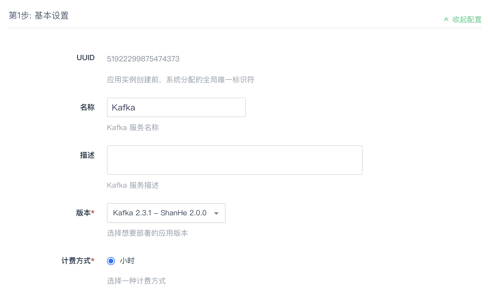
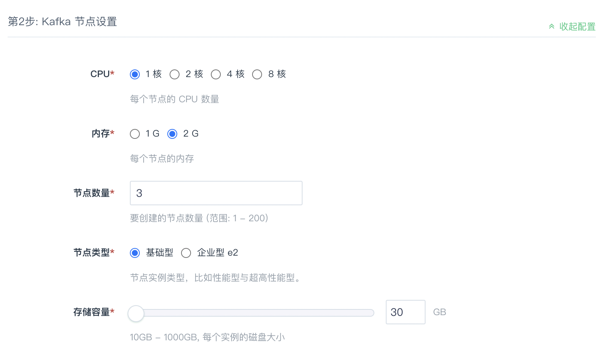
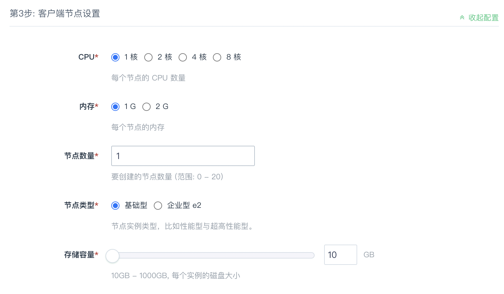
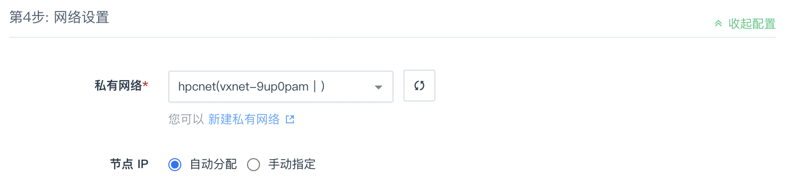
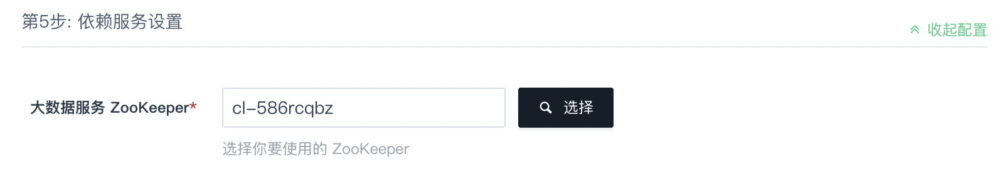
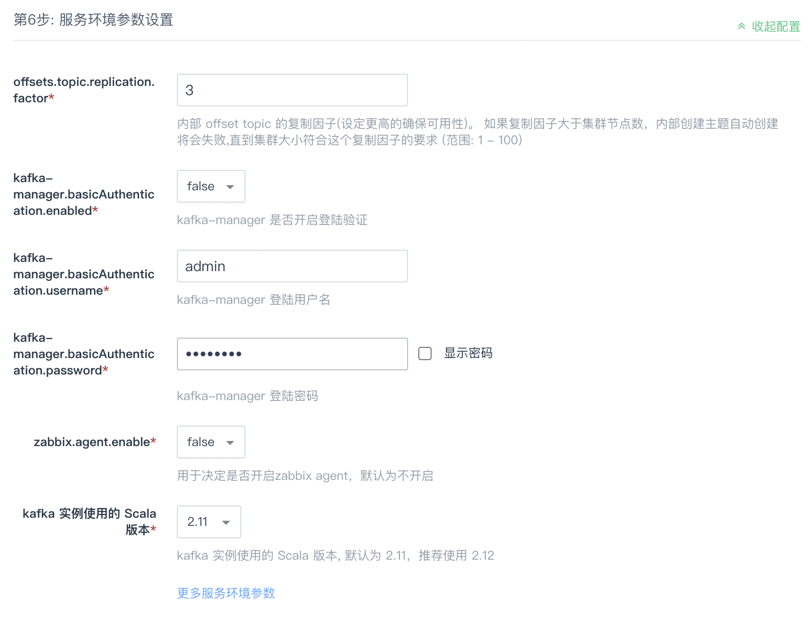

创建 Kafka 集群
前提条件
创建 Kafka 集群前，您需要先创建一个 VPC 网络，并创建一个 Zookeeper 集群，其他地方创建的 ZooKeeper 集群识别不出来，建议 Kafka 与 ZooKeeper 在一个私有网络中。
为了保障数据安全，Kafka 集群需要运行在受管私有网络中。所以在创建一个 Kafka 集群之前，需要创建一个 VPC 和一个受管私有网络，受管私有网络需要加入 VPC，并开启 DHCP 服务（默认开启）。
第一步：基本设置

根据实际需求填写名称和描述，不影响集群的功能，版本一般建议选择最新版本。
第二步：Kafka 节点设置

CPU、内存、节点数量、节点类型和存储容量根据自己实际需求进行选择即可，生产环境建议使用至少3个节点。
第三步：客户端节点设置

第四步：网络设置

出于安全考虑，所有的集群都需要部署在私有网络中，请选择自己创建的网络。
第五步：依赖服务设置

选择您所依赖的ZooKeeper集群。
说明
初次使用 Kafka，请在上图中点击快捷创建创建一个 Zookeeper 集群。
第六步：参数设置

注意
offsets.topic.replication.factor 参数必须小于或者等于 Kafka broker 节点数，不能大于 Kafka broker 节点数，否则就会消费不了消息，直至集群中 Kafka broker 节点数大于或者等于此参数。
按照实际需求配置 Kafka 参数，同时也可以配置 Kafka-manager 是否需要登录，登录账户与密码和端口参数。
第七步：用户协议
阅读并同意 AppCenter 用户协议之后，点击提交，即可开始部署应用。